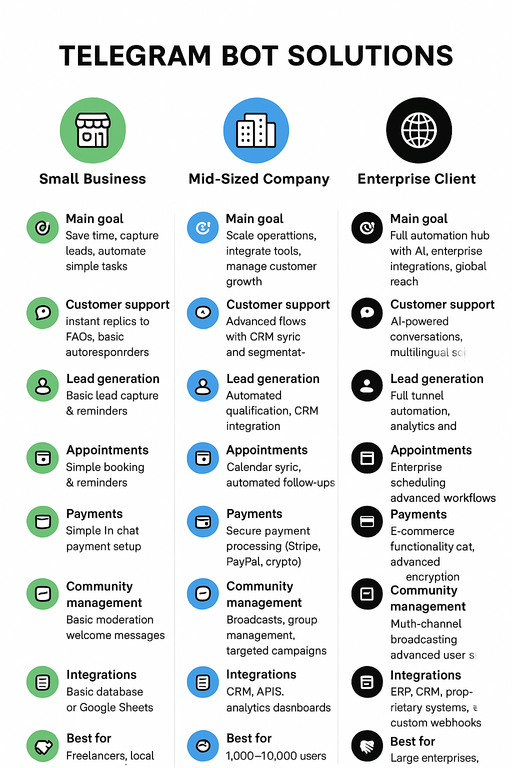
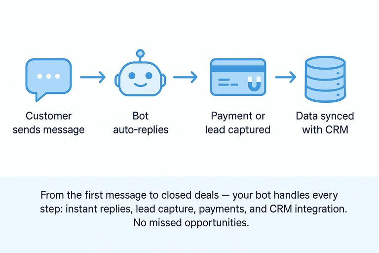
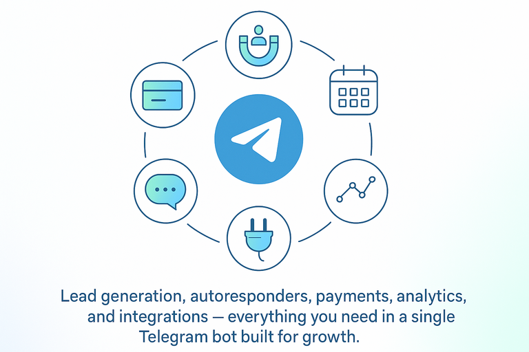
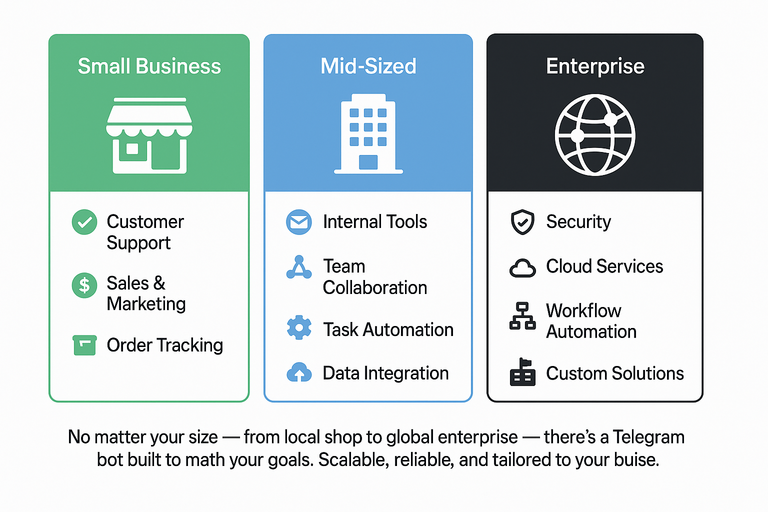
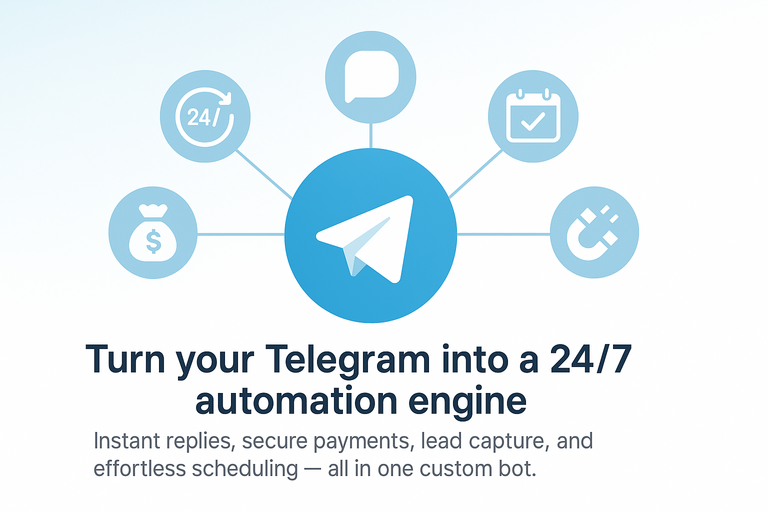

Rule-Based Telegram ChatBot
Links:

Brief Overview

The Rule-Based Telegram ChatBot project is a powerful, AI-driven Telegram bot designed to transform customer interactions by automating responses and tasks within the Telegram messaging platform. By leveraging natural language processing (NLP) and rule-based logic, the bot provides instant, accurate, and personalized replies to user queries 24/7, eliminating the need for customers to wait for human agents. This solution is particularly valuable for businesses seeking to enhance customer satisfaction, reduce operational costs, and improve efficiency. The bot handles a wide range of interactions—from answering frequently asked questions to processing orders and gathering customer insights—enabling businesses to focus their human resources on more complex tasks. With its ability to integrate seamlessly into existing workflows and its strong emphasis on data security, the Rule-Based Telegram ChatBot project offers a scalable, reliable, and user-friendly solution to meet the growing demand for instant, accessible customer service.
Details

Problem & Solution Fit
In today’s fast-paced digital environment, customers expect immediate responses and round-the-clock support. Traditional customer service models struggle to meet these demands efficiently, often leading to delayed responses, increased costs, and inconsistent service quality. The Rule-Based Telegram ChatBot project addresses these challenges by automating customer interactions on Telegram, a messaging platform with over 2 billion users globally. The bot uses AI and rule-based logic to interpret user messages, provide contextually relevant answers, and perform tasks such as order processing or appointment scheduling. This reduces the workload on human agents, speeds up response times, and ensures customers receive consistent support anytime, anywhere. For example, a retail business can utilize the bot to promptly handle product inquiries and order confirmations, thereby enhancing customer satisfaction and conversion rates.
Use Cases
-
Customer Support Automation A telecommunications company implemented the Rule-Based Telegram ChatBot bot to manage incoming customer queries about billing, service outages, and account information. The bot provided instant responses and routed complex issues to human agents, reducing average response time by 60% and increasing first-contact resolution by 40%. This improved customer satisfaction scores and allowed the support team to focus on high-priority tasks.
-
E-commerce Personal Shopping Assistant An online fashion retailer used the bot to create a personalized shopping assistant on Telegram. Customers could browse products, receive tailored recommendations, and complete purchases through the bot. The bot also sent order updates and promotional offers, leading to a 25% increase in conversion rates and a 30% reduction in cart abandonment.
-
Healthcare Appointment Scheduling A healthcare provider deployed the bot to handle appointment bookings, reminders, and patient inquiries. The bot is integrated with the clinic’s scheduling system, allowing patients to book, reschedule, or cancel appointments via Telegram. This reduced administrative workload by 40% and improved patient engagement through timely notifications.
-
Educational Institution Support A university utilized the bot to offer 24/7 support to students, addressing frequently asked questions about courses, deadlines, and campus services. The bot also assisted with onboarding by guiding new students through registration processes, reducing the workload on staff, and improving student satisfaction.
-
Financial Services Compliance Assistant A bank employed the bot to handle internal compliance queries, explain policies, and assist with incident reporting workflows. The bot’s ability to provide instant, accurate responses improved compliance training efficiency and reduced the time spent on manual documentation.
-
Hospitality Industry: Guest Services & Bookings A hotel chain integrated the bot to manage guest inquiries, room bookings, and check-in/check-out processes via Telegram. Guests could request information about amenities, room availability, and local attractions, as well as make reservations or modifications. The bot also sent automated reminders and confirmations, reducing front desk workload by 35% and improving guest satisfaction through faster, more personalized service.
-
Logistics & Delivery: Real-Time Tracking & Support A logistics company used the bot to provide customers with real-time updates on package status, delivery times, and shipping documentation. Customers could inquire about their shipments, receive estimated delivery windows, and request rerouting or rescheduling of their shipments. This reduced customer service calls by 50% and improved transparency, leading to higher trust and repeat business.
-
Human Resources: Employee Onboarding & FAQs A multinational corporation deployed the bot to streamline employee onboarding. New hires could ask questions about company policies, benefits, and procedures, and receive instant responses. The bot also guided employees through onboarding paperwork and provided reminders for training sessions. This reduced HR workload by 40% and accelerated the onboarding process, ensuring a smoother transition for new employees.
-
Event Management: Registration & Attendee Support An event management company used the bot to handle registrations, ticket sales, and attendee inquiries for conferences and workshops. Attendees could register, receive event updates, and ask logistical questions (e.g., venue details, agenda, speaker information). The bot also sent automated reminders and post-event surveys, which increased attendee engagement and reduced manual coordination efforts by 60%.
-
Non-Profit Organizations: Donor Engagement & Volunteer Coordination A non-profit organization implemented the bot to engage donors and coordinate volunteers. Donors could receive updates on campaigns, make contributions, and ask about impact metrics. Volunteers could sign up for events, receive task assignments, and get answers to FAQs. This improvement resulted in a 20% increase in donor retention and streamlined volunteer management, enabling the organization to focus more on its mission.
-
Real Estate: Property Inquiries & Virtual Tours A real estate agency used the bot to provide potential buyers with property details, virtual tour links, and answers to common questions about pricing, amenities, and neighborhood information. The bot also scheduled in-person viewings and sent follow-up messages, resulting in a 25% increase in lead conversion rates and a reduction in the time agents spent on repetitive inquiries.
-
IT Support: Troubleshooting & Ticket Management An IT services company integrated the bot to handle initial troubleshooting for common technical issues. Users could describe their problems, and the bot would provide step-by-step solutions or escalate complex issues to the support team for further assistance. This reduced the volume of low-priority tickets by 50% and improved resolution times for end-users.
-
Travel Agencies: Itinerary Planning & Customer Support A travel agency used the bot to assist customers with itinerary planning, booking confirmations, and travel-related inquiries. Customers could request recommendations for destinations, check visa requirements, and receive alerts about travel advisories. The bot also provided 24/7 support for urgent issues, such as flight delays or cancellations, thereby enhancing customer trust and loyalty.
-
Government Services: Citizen Queries & Public Information A municipal government deployed the bot to answer citizen queries about public services, permits, and local regulations. Residents could ask about garbage collection schedules, property taxes, or public events and receive instant responses. This reduced the burden on call centers and improved accessibility to public information, especially for non-tech-savvy citizens.
-
Retail Loyalty Programs: Personalized Offers & Rewards A retail chain used the bot to manage its loyalty program. Customers could check their reward points, receive personalized offers, and redeem discounts via Telegram. The bot also sent notifications about exclusive sales and events, resulting in a 30% increase in customer engagement and repeat purchases.
-
Manufacturing: Supplier & Inventory Coordination A manufacturing company implemented the bot to coordinate with suppliers and manage inventory inquiries. Suppliers could check order statuses, submit invoices, and receive updates on delivery schedules. Internally, employees could query inventory levels and receive alerts when restocking needs arose, which improved supply chain transparency and reduced communication delays by 45%.
-
Fitness & Wellness: Appointment Booking & Health Tips A fitness center used the bot to allow members to book classes, receive workout tips, and track their attendance. The bot also sent motivational messages and personalized fitness recommendations, resulting in a 15% increase in member retention and a 20% reduction in no-show rates for classes.
-
Legal Services: Client Intake & Case Updates A law firm deployed the bot to handle initial client intake, answer FAQs about legal processes, and provide case status updates. Clients could submit documents, receive reminders for court dates, and get answers to common legal questions. This reduced administrative overhead by 30% and improved client communication efficiency.
-
Automotive: Service Appointments & Vehicle Information An automotive dealership utilized the bot to schedule service appointments, offer vehicle maintenance tips, and address customer inquiries about features or warranties. Customers could also receive recall notices and service reminders, improving customer satisfaction and service center efficiency.
-
Media & Entertainment: Content Recommendations & Subscriptions A streaming service integrated the bot to recommend content based on user preferences, manage subscriptions, and answer technical support questions. Users can search for shows, receive personalized watchlists, and troubleshoot playback issues, thereby enhancing the user experience and reducing churn.
Differentiators

Unlike many chatbot solutions, the Rule-Based Telegram ChatBot project combines the flexibility of rule-based logic with advanced AI-driven natural language understanding, enabling it to handle both complex and straightforward interactions effectively. The bot is designed for easy integration with existing business systems, requiring no additional hardware and minimal coding knowledge, which reduces upfront costs and deployment time. Its robust encryption ensures that all user data is secure, addressing critical privacy concerns in industries such as healthcare and finance. Additionally, the bot’s ability to learn from interactions and adapt over time sets it apart from static, rule-only bots, providing a more natural and engaging user experience.
Implementation & Support

The Rule-Based Telegram ChatBot project is deployed via a straightforward process that includes setting up a Telegram bot account, configuring the bot’s logic using a user-friendly interface, and integrating it with relevant business systems. The project team provides comprehensive onboarding, training, and ongoing support to ensure smooth operation and continuous improvement. Customers can expect minimal disruption during deployment and can track performance metrics such as response time, resolution rate, and user satisfaction to measure the bot’s impact on their operations.
What you can do
To explore how the Rule-Based Telegram ChatBot project can specifically benefit your business and enhance your customer interactions, contact me for a personalized demonstration and consultation. I will work with you to tailor the bot’s capabilities to your unique needs and ensure a seamless integration that drives measurable results.